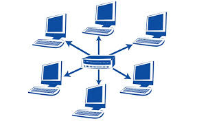
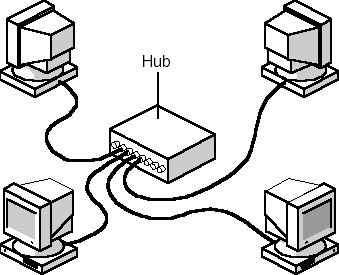
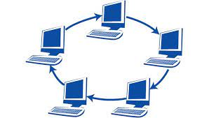
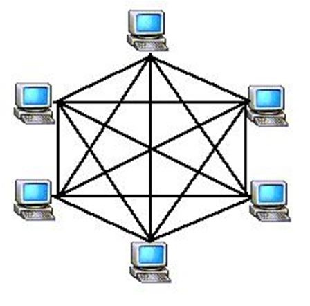
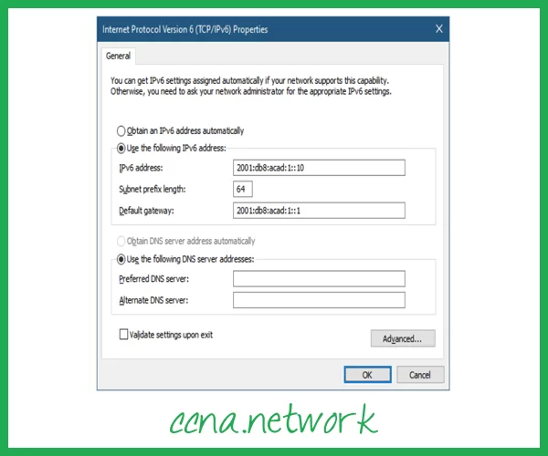
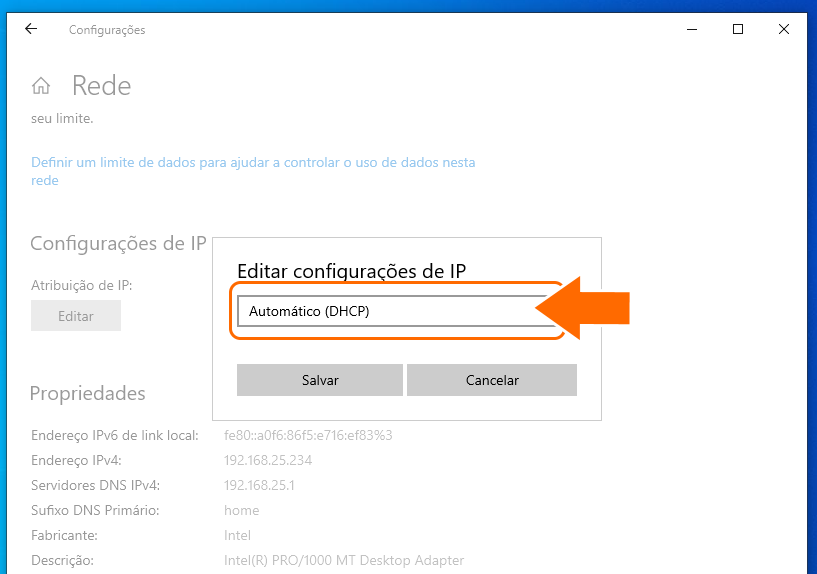

A topoloia é um sistema que demonstra como os hosts estão conectados a rede, destacando a estrutura da rede, e é mostrado tanto fisicamente ou logicamente.Existe dois tipos de topologia de rede, a logica e a fisica.
A topologia Fisica mostra como os hosts estão dispostos e conectados no ambiente fisco. Seguindo um Layout Fisico como a posição de cada host, a forma que os cabos estão conectados, nos mostrando toda a topologia de rede, que o objetivo é auxiliar em varios pontos critics, como a maleabilidade, velocidade na transferencia dos dados e segurança.
A topologia logica é um pouco diferente, ela demonstra a forma como os daods são transmitidos na rede, ou a forma que os dados passam de um host para outro, sem se preocupar com a conexão fisica dos hosts, a forma como os dados são transmitidos na rede podem ser controladas por switches e roteadores
Os hosts estão conectados no mesmo meio fisico ,embora os dados não circulem de fato nos nós,portanto se um computador estiver tentando escrever para outros computadores e os dados enviandos podem acabar colindo um no outro interropendo a conexã.
Estrela atualmente é a topologia mais utilizada, usa o meio fisico de par trançado com um centralizador de rede como Switch e Roteador, este se entrega de fazer a cominucação entre os hosts, essa parte facilita detecção dos problemas, então se um computador não estiver ligado na rede a Luz do concebtrador fica desligada, mostrando que tem algum problema no host.
Estes hosts funcionam conectados em uma serie na qual forma um circulo,aonde os dados passam por todos os hots ate chegar no seu destinario,e somente quem recebe e quem envia pode mecher na mensagem.
Esta é uma topologia muito utilizada ,pois ela facilita a instalação e a configuração dos hots. E se entrelaçam pois assim existem varios caminhos possiveis.
Alto custo de implantação.
Para obter a comunicação entre os hosts,eu preciso da sua parte fisica e tambem logica,sem os dois fatores juntos nao é possivel a comunicação entre as redes
O protocolo ipv4 permite que os hots trafeguem na internet,todos que estiverem online teram um codigo 99.48.224.242. por exemplo,que permite enviar e receber informaçoes de outros hosts que estao conectados na rede
Estes endereços IP, é formado por 04 blocos de 8 bits,estes são exibidos por numeros de 0 a 255.
Os endereços que iniciam com 192.168,com 10 ou com 172.16 ate 172.31,estes sao poupados para as redes locais ,portanto nao sao utilizados na internet
o IPV4 transfere endereços de produtos de 32 bits.sustenta mais ou menos 4,29 bilhões de IPs no mundo todo,o que nos tirou alcançar nossa crise atual: o sistema nao suporta mais endereços que isto
Vamos imaginar que a mascara de rede é um bairro no qual possui varias residencias(IPs).Os IPs que utilizam uma determinada classe,pertence aquela classe da mesma forma que se uma residencia (IP),esta presente no bairro(mascara de rede)pertence a mesma,sendo que cada IP corresponde a uma mascara de rede
OBS:Os IPs possuem 4 octetos de binarios que totalizam 32 bits
O Gateway em geral é um host ou dispositivo de rede no qual se depara com duas redes.podemos traduzir o gateway como porta ou portão,ela é uma porta que libera o acesso ou nao as outras redes,libera a passagem dos dados entre os hosts,no qual pode se instalar politicas de acesso para verificar a segurança dos daods.
È como se fosse um portal para liberar acesso da internet ele isola e domestica a rede.
Caso eu tenha 4 computadores e nao queira um modem para compartilhar a internet o gateway faz esse serviço para dar acesso a todos os 4 computadores
Exemplo:
Computador A:
IP:192.168.1.100
Mascara de rede:255.255.255.0
Gateway:192.168.1.1
Computador B:
IP:192.168.1.158
Mascara de rede:255.255.255.0
gateway:192.168.1.1
Computador C:
IP:192.168.1.200
Mascara de rede:255.255.255.0
gateway:192.168.1.1
Computador D:
IP:192.168.1.200
Mascara de rede:255.255.255.0
gateway:192.168.1.1
Existem duas formas para configurar um cliente na rede ,o dinâmico onde so insere o cabo de rede e o protocolo DHCP inclui todas as informaçoes como IP,Gateway,DNS e mascara de rede, e a outra forma é estatico onde voce entra em (painel de controle-redes de internet-central de compartilhamento de rede-alterar as configuraçoes do adaptador--botão direito do mouse em cima do icone do adaptador-propriedade-protocolo TCP/IPCV4),chegando aqui voce inseri manualmente as informaçoes manualmente necessarias para se conectar na rede
